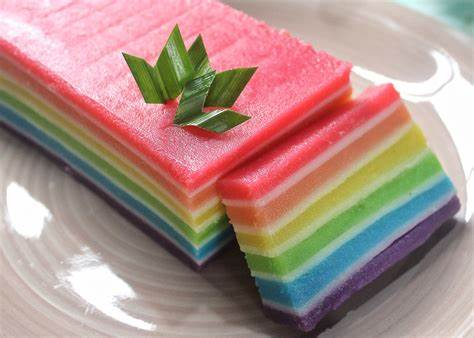

Resep kue basah Lapis rainbow

Bahan-Bahan:
- 250 gr Tepung tapioka
- 150 gr Tepung terigu
- 50 gr Tepung beras
- 350 gr Gula pasir
- Air santan 1liter dari 1 butir kelapa tua
- 1/2 sdm Garam
- 1 bungkus Panili
- pewarna makanan
Langkah-Langkah:
- Langkah 1 :
- Untuk santan bisa langsung bisa di didihkan dulu tunggu hangat baru di pake
- Langkah 2 :
- Campur semua bahan aduk sampai rata
- Langkah 3 :
- Bagi adonan sesuai selara untuk warna ya
- Langkah 4 :
- Siapkan kukusan sampai mendidih
- Langkah 5 :
- Siapkan loyang ukuran 18cm kotak,, bisa sesuai selara juga ya loyangya, oles minyak dulu
- Langkah 6 :
- Masukan 3sendok sayur kukus 7 menitan, api sedang
- Langkah 7 :
- Buka kukusan kalo sudah set timpa lagi dengan adonan lainya begitu seterusnya terakhir kukus 30menita biar tanak
- Langkah 8 :
- Lalu angkat biarkan dingin baru di sisir pinggiranya balik loyangya
- Langkah 9 :
- Potong2 pake spatula atau pisau alasi plastik